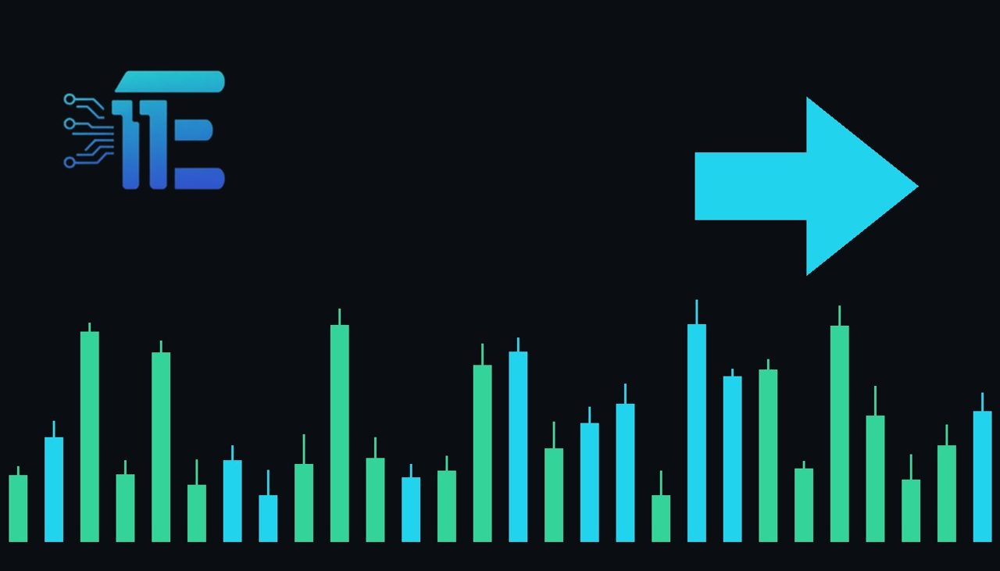

ECB Holds Rate at 2.5% as Traders Eye December HikeECB រក្សាអត្រាការប្រាក់នៅ 2.5% ខណៈអ្នកជួញដូររង់ចាំការដំឡើងនៅខែធ្នូ
XAU/USD impact: ◆ Mixedផលប៉ះពាល់លើ XAU/USD: ◆ ចម្រុះ

The European Central Bank held its key interest rate at 2.5%, with markets viewing the move as a hawkish pause. A potential December rate hike influences the US dollar and global yields, shaping the direction of gold.
ធនាគារកណ្តាលអឺរ៉ុប (ECB) បានរក្សាអត្រាការប្រាក់គោលរបស់ខ្លួននៅកម្រិត 2.5% ដោយទីផ្សារចាត់ទុកចំណាត់ការនេះថាជាការផ្អាកបែបតឹងរ៉ឹង។ លទ្ធភាពនៃការដំឡើងអត្រាការប្រាក់នៅខែធ្នូជះឥទ្ធិពលលើដុល្លារអាមេរិក និងទិន្នផលសញ្ញាបណ្ណ ដែលកំណត់ទិសដៅសម្រាប់មាស។
The European Central Bank decided to keep its key interest rate unchanged at 2.5%. Financial markets interpreted the move as a hawkish pause rather than a conclusion to the monetary tightening cycle. Market pricing indicated that investors assigned a 67% probability to a potential rate hike at the central bank's upcoming December meeting.
ធនាគារកណ្តាលអឺរ៉ុបបានសម្រេចរក្សាអត្រាការប្រាក់គោលរបស់ខ្លួនឱ្យនៅដដែលក្នុងកម្រិត 2.5%។ ទីផ្សារហិរញ្ញវត្ថុបានចាត់ទុកការសម្រេចចិត្តនេះថាជាការផ្អាកបែបតឹងរ៉ឹង ជាជាងការបញ្ចប់វដ្តនៃការដំឡើងអត្រាការប្រាក់។ ការកំណត់តម្លៃនៅក្នុងទីផ្សារបានបង្ហាញថា វិនិយោគិនបានផ្តល់លទ្ធភាព 67% ដល់ការដំឡើងអត្រាការប្រាក់ដែលអាចកើតមាននៅក្នុងកិច្ចប្រជុំនាខែធ្នូខាងមុខ។
Central bank policy outside the United States influences gold primarily through the foreign exchange channel and international bond yields. When the ECB signals that interest rate increases remain under consideration, the euro tends to find support against the US dollar. Because gold is predominantly priced in USD, a softer dollar index can make bullion less expensive for buyers using other currencies, offering underlying support to XAU/USD.
គោលនយោបាយរបស់ធនាគារកណ្តាលនៅក្រៅសហរដ្ឋអាមេរិកជះឥទ្ធិពលដល់មាសជាចម្បងតាមរយៈទីផ្សារប្តូរប្រាក់បរទេស និងទិន្នផលសញ្ញាបណ្ណអន្តរជាតិ។ នៅពេលដែល ECB បង្ហាញសញ្ញាថាការដំឡើងអត្រាការប្រាក់នៅតែស្ថិតក្នុងការពិចារណា ប្រាក់អឺរ៉ូមានទំនោរទទួលបានការគាំទ្រធៀបនឹងដុល្លារអាមេរិក។ ដោយសារតែមាសត្រូវបានគិតថ្លៃជា USD ភាពទន់ខ្សោយនៃសន្ទស្សន៍ប្រាក់ដុល្លារអាចធ្វើឱ្យមាសមានតម្លៃសមរម្យជាងមុនសម្រាប់អ្នកទិញដែលប្រើប្រាស់រូបិយប័ណ្ណផ្សេងទៀត ដែលផ្តល់ការគាំទ្រដល់ XAU/USD។
However, the prospect of prolonged high borrowing costs creates competing headwinds for precious metals. Gold produces no regular yield or interest, which makes it sensitive to elevated bond yields across global sovereign debt markets. If European policy rates increase further, higher benchmark returns on fixed-income assets can diminish the appeal of holding unbacked bullion, offsetting the benefits of currency fluctuations.
ទោះជាយ៉ាងណាក៏ដោយ លទ្ធភាពនៃការរក្សាថ្លៃដើមកម្ចីខ្ពស់ក្នុងរយៈពេលយូរបានបង្កើតជាសម្ពាធប្រឆាំងសម្រាប់លោហៈធាតុមានតម្លៃ។ មាសមិនបង្កើតផលចំណេញជាការប្រាក់ជាប្រចាំនោះទេ ដែលធ្វើឱ្យវាមានភាពរសើបចំពោះទិន្នផលសញ្ញាបណ្ណរដ្ឋាភិបាលទូទាំងពិភពលោក។ ប្រសិនបើអត្រាការប្រាក់គោលនយោបាយនៅអឺរ៉ុបកើនឡើងបន្ថែមទៀត ផលចំណេញកាន់តែខ្ពស់លើទ្រព្យសកម្មដែលមានចំណូលថេរអាចកាត់បន្ថយភាពទាក់ទាញនៃការកាន់កាប់មាស ដែលអាចប៉ះប៉ូវផលវិជ្ជមានពីការប្រែប្រួលរូបិយប័ណ្ណ។
Looking forward, market participants will evaluate whether the ECB implements a rate hike in December as the 67% implied probability suggests. If policymakers follow through with additional monetary tightening, rising European yields could keep pressure on non-yielding metals. Conversely, if upcoming economic data weakens and dampens expectations for further hikes, shifting currency dynamics between the euro and the US dollar will dictate the immediate direction for gold traders.
ឆ្ពោះទៅមុខ អ្នកចូលរួមក្នុងទីផ្សារនឹងតាមដានថាតើ ECB នឹងអនុវត្តការដំឡើងអត្រាការប្រាក់នៅក្នុងខែធ្នូ ដូចដែលការរំពឹងទុក 67% បានបង្ហាញដែរឬទេ។ ប្រសិនបើអ្នកបង្កើតគោលនយោបាយបន្តរឹតបន្តឹងរូបិយវត្ថុបន្ថែម ទិន្នផលកើនឡើងនៅអឺរ៉ុបអាចបន្តដាក់សម្ពាធលើលោហៈធាតុដែលគ្មានការប្រាក់។ ផ្ទុយទៅវិញ ប្រសិនបើទិន្នន័យសេដ្ឋកិច្ចចុះខ្សោយ និងកាត់បន្ថយការរំពឹងទុកសម្រាប់ការដំឡើងអត្រាការប្រាក់បន្ត ចលនារូបិយប័ណ្ណរវាងប្រាក់អឺរ៉ូ និងដុល្លារអាមេរិកនឹងដឹកនាំទិសដៅសម្រាប់អ្នកជួញដូរមាស។
Key takeawaysចំណុចសំខាន់ៗ
- The European Central Bank maintained its key interest rate at 2.5%.
- ធនាគារកណ្តាលអឺរ៉ុបបានរក្សាអត្រាការប្រាក់គោលរបស់ខ្លួននៅកម្រិត 2.5%។
- Markets viewed the decision as a hawkish pause, pricing a 67% chance of a December hike.
- ទីផ្សារចាត់ទុកការសម្រេចចិត្តនេះថាជាការផ្អាកបែប hawkish ដោយកំណត់លទ្ធភាព 67% នៃការដំឡើងនៅខែធ្នូ។
- Shifting euro strength and global bond yields create mixed crosscurrents for gold.
- ការប្រែប្រួលនៃកម្លាំងប្រាក់អឺរ៉ូ និងទិន្នផលសញ្ញាបណ្ណសកលបង្កើតជាកត្តាចម្រុះសម្រាប់តម្លៃមាស។
Original commentary by THE MARKET CODE, based on public reporting from Economy. Written with the help of AI. Educational only, not financial advice.
មតិវិភាគដើមដោយ THE MARKET CODE ផ្អែកលើការរាយការណ៍សាធារណៈពី Economy។ សរសេរដោយមានជំនួយពី AI។ មាតិកាអប់រំប៉ុណ្ណោះ មិនមែនជាដំបូន្មានហិរញ្ញវត្ថុទេ។